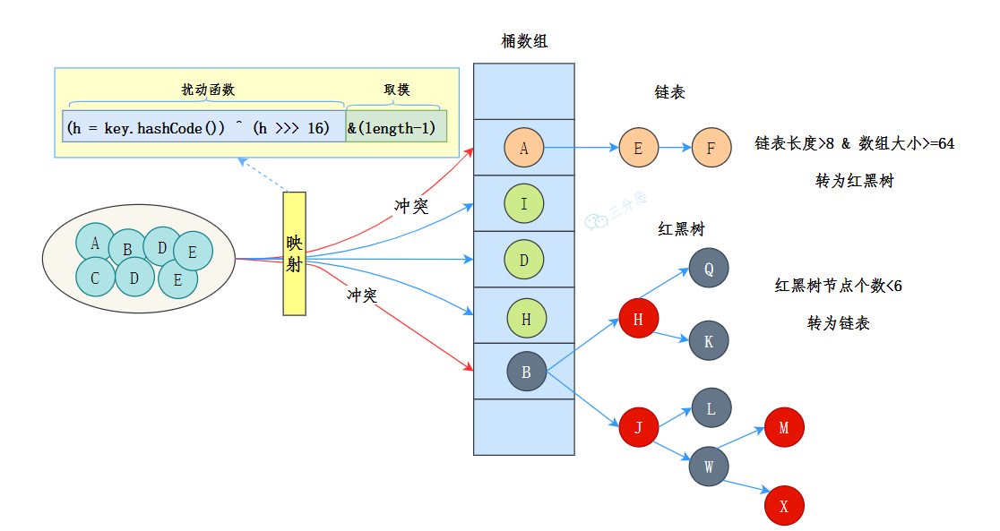
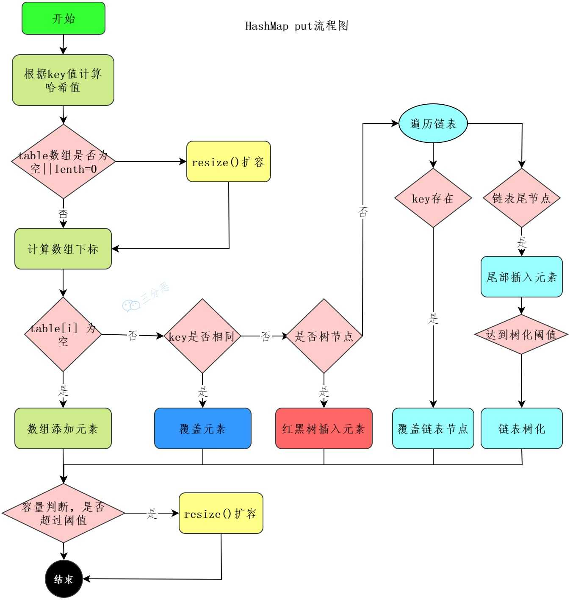
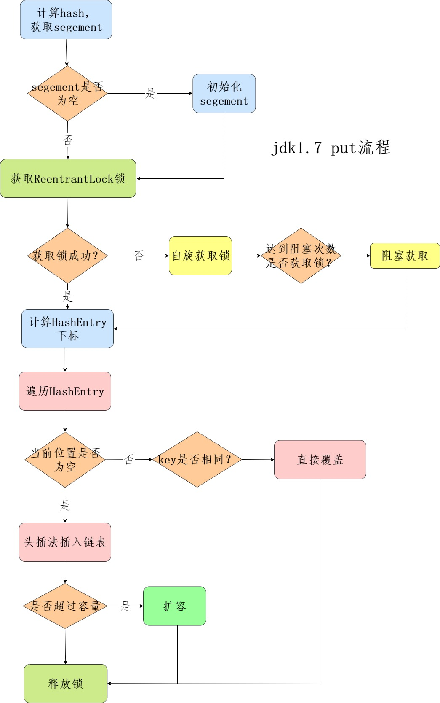
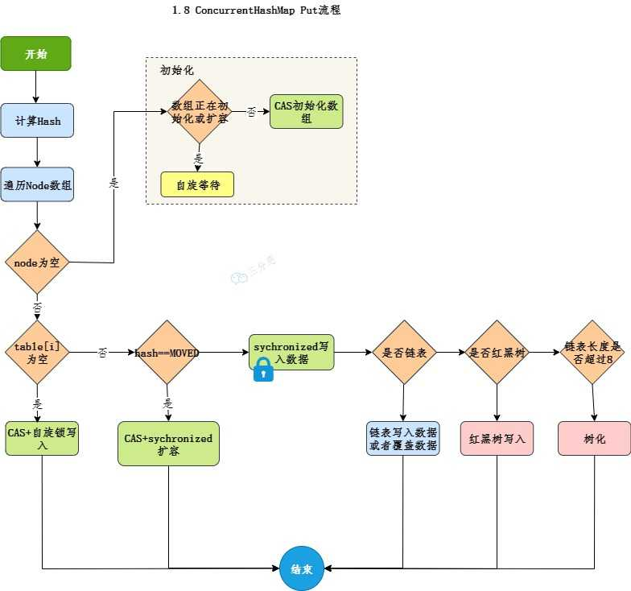

Java的集合类
在集合框架下，有两大种类
只存一种种类的Collection，是最基本的集合框架形式，下分3个分支
List：一个可包含重复元素的有序集合。实现类包括ArrayList、LinkedList等Set：一个不包含重复元素的集合。实现类包括HashSet等Queue：一个用于保持元素队列的集合。实现类包括PriorityQueue、ArrayDeque等
存键值对的Map，实现类包括
HashMao、TreeMap等
Java在util包了还提供了一些常用的工具类
Collections：提供了一些对集合进行排序、二分查找、同步的静态方法Arrays：提供了一些对数组进行排序、打印、和List进行转换的静态方法
Collection继承了Iterable接口，这意味着所有实现了Collection接口的类都必须实现iterator()方法。因此可以使用增强型for来遍历集合中的元素。
Iterator中的并发修改处理策略：
快速失败机制会在检测到集合在迭代过程中被修改时，立刻抛出
ConcurrentModificationException异常。其实现的原理与乐观锁非常类似。在集合内部维护一个修改计数器modCount。在创建迭代器时，迭代器会记录当前的计数器，每次调用迭代器相关方法时，迭代器都会检测这个计数器的值有没有发生改变。若有改变则抛异常。安全失败机制在迭代时不会抛异常，原理即在迭代器被创建时会基于原集合创建一个副本，然后在这个副本中迭代。原集合的修改不会影响正在进行的迭代。但该方法的一致性不强。可见于
CopyOnWriteArrayList和ConcurrentHashMap。其中，CopyOnWriteArrayList在写时会将原数组复制一份，加锁写，然后将原容器的引用引向新容器。
List
ArrayList
可以将其看作是一个动态数组，在需要扩容时，会扩容数组容量，新数组的空间是原来的1.5倍，然后把原数组的值拷贝到新数组中。
为了不将数组中的空白元素也序列化，该集合类中的writeObject()方法被重写了，只序列化有效数据。
该集合类本身线程不安全，可以使用Collections.synchronizedList()方法返回一个线程安全的List，即SynchroSynchronizedList。或者直接使用CopyOnWriteArrayList。
Vector是远古时期的非同步动态数组，在所有的方法前都使用synchronized关键字进行同步，因此效率较低。
LinkedList
该集合类继承了AbstractSequentialList并实现了Deque，可以拿来当双端队列。但其本质还是一个双向链表。
CopyOnWriteArrayList
CopyOnWriteArrayList是ArrayList的线程安全版本。其内部使用volatile关键字修饰数组array，确保读操作的内存的可见性。
其缺点是写操作的时候会复制一份数组，开销较大，因此适合读多写少的场景。
Set
HashSet是由HashMap实现的，只不过值由一个固定的Object对象填充，而键用于相关操作。该集合主要用于去重。
Queue
| 队列操作 | 抛异常方法 | 不抛异常方法 |
|---|---|---|
| 插入 | add | offer |
| 删除 | remove() | poll() |
| 元素检查 | element() | peek() |
PriorityQueue
优先队列中的元素按照自然顺序或Comparator排序，出队顺序按优先级。其底层是基于堆实现的，默认是最小堆。其内部使用动态数组进行存储。
完全二叉数除去最后一层外，其他层节点都是满的，最后一层的节点都靠左排列。对于索引为i的节点，其父节点索引为(i - 1) / 2，左子节点索引为2 * i + 1，右子节点索引为2 * i + 2。在最小堆中，每个节点的值都小于等于其子节点的值。使用完全二叉树构建的堆，在插入元素时会将元素插入到末尾，删除时会删去堆顶元素并将最后一个元素替换堆顶。然后调整堆至正常状态。
优先队列非线程安全，不允许null元素，迭代的顺序也并不稳定，当元素数量达到数组容量时，会自动扩容（一般是增长50%）。
BlockingQueue
BlockingQueue是JUC包下的一个线程安全队列，支持阻塞式的“生产者-消费者”模型。其实现类有很多
| 实现类 | 数据结构 | 是否有界 | 特点 |
|---|---|---|---|
ArrayBlockingQueue |
数组 | 有界 | 先进先出，基于数组，固定容量 |
LinkedBlockingQueue |
链表 | 可选有界 | 先进先出，基于链表，默认容量为Integer.MAX_VALUE |
PriorityBlockingQueue |
堆（优先队列） | 无界 | 基于优先级队列，元素按优先级排序 |
DelayQueue |
堆（优先队列） | 无界 | 基于优先级队列，元素按延迟时间排序，只有延迟时间到的元素才能出队 |
SynchronousQueue |
无缓冲 | 无界 | 必须一对一交换数据，适用于高吞吐量场景 |
LinkedTransferQueue |
链表 | 无界 | 基于链表，支持直接传输元素tryTransfer() |
阻塞队列使用ReentrantLock和Condition来实现线程安全和阻塞操作。其内部维护两个锁，一个用于控制入队操作，另一个用于控制出队操作。这样可以提高并发性能，因为入队和出队操作可以同时进行。
Map
HashMap
基于哈希表的键值对集合。JDK8中该集合类的数据结构为数组 + 链表 + 红黑树。数组用来存储键值对，每个键值对可以通过索引直接拿到，索引通常是对键的哈希值进一步哈希拿到的。相同索引的键值对通过链表存储起来。链表过长时（链表的长度大于8且数组长度大于64），链表就会转换成红黑树。

红黑树是一种自平衡的二叉树，用于防止树退化为链表。
- 每个节点要么是红色，要么是黑色
- 根节点永远是黑色
- 根节点下的
null节点永远是黑色 - 红色节点的子节点一定是黑色的
- 从任意节点到其每个叶子节点的所有简单路基那个都包含相同数目的黑色节点
红黑树通过左旋和右旋来调整树的结构，避免某一侧过深。通过染色，保证树的高度不会失衡。
HashMap的初始容量为16，扩容的阈值为capacity * loadFactor，其中的loadFactor是负载因子，默认为0.75。扩容后的数组大小为原来的2倍，然后把原来的元素重新计算哈希值，放到新的数组中。
其put操作较为复杂

- 调用
hash(key)方法计算键的哈希
将key的hashCode的高16位和低16位进行异或运算。在容量不高的情况下，其高位都是0。由于与运算的特性，哈希的高位也相当于截取低位了。因此需要通过高低位异或让高位也参与运算之中，添加哈希值的随机性，从而减少哈希冲突。 - 利用这个哈希值计算桶索引并检查是否为空。
计算方法为(n - 1) & hash，由于n总是2的幂，这相当于hash & n。n是数组的容量。将容量设置为2的幂次方，是为了快速定位元素在底层数组中的下标。由于(n - 1)恰好让容量低一位的二进制数据全是1，这样进行与运算才有意义。 - 若目标桶为空，则直接创建新节点放入；否则判断当前位置的第一个节点是否与新节点的key相同，相同则直接覆盖value，不同则发生了哈希冲突
- 如果是链表，则将新节点添加到链表底部，若链表长度大于等于8，就将链表转换为红黑树
- 每次插入新元素后都需要检查是否需要扩容，并且重新计算每个节点的索引，进行数组重新分布。
get操作则相对简单

- 通过哈希值定位索引
- 定位桶
- 检查第一个节点，看是否匹配
- 若不匹配，则遍历链表或红黑树查找
- 返回结果
hashMap默认初始容量为16.在进行初始化时，若指定的容量不是2的幂，那么hashMap会进行向上取2次幂。
提前指定一个较大的初始容量有利于减少因扩容导致的重哈希操作，但也有可能造成不必要的内存花销。
hashMap在扩容时，遍历哈希表中的元素，将其重新分配到新的哈希表中。若当前桶中只有一个元素，那么重新计算确定新的索引位置；若当前桶是链表，那么会通过旧键的哈希值与旧的数组大小取模，条件为真则留在原索引位置，斗则元素移动到原索引+旧数组大小的位置；若当前桶是红黑树，那么会调用split()方法分裂树节点，保证树的平衡。
由于旧容量与新容量之间都是2的幂，那么新位置就只有原位置还有原位置+原数组大小两种可能，可以通过该原理简化操作。并且由于扩容的时候很多节点都不需要动位置，所以其性能开销并没有想象中恐怖。
JDK 7中扩容使用头插法，这可能会导致链表无法导致原有顺序，还可能会导致在并发状态下死循环。于是在JDK 8中改用了尾插法。
要实现一个hashMap，整体思路为
- 实现一个hash函数，对键的hashMap进行扰动
- 实现拉链法解决哈希冲突
- 扩容后，重新计算哈希值，将元素放到新数组中。
hashMap不是线程安全的，早期的JDK版本中可以使用Hashtable保证线程安全。也可以使用Collections.synchronizedMap方法返回一个线程安全的Map。使用CAS + synchronized关键字的ConcurrentHashMap更优雅。
LinkedHashMap在HashMap的基础上增加了一个双向链表来保持键值对的插入顺序。
TreeMap通过key比较器决定元素的排序，若没有指定比较器，那么key必须实现Comparable接口。其底层是红黑树。
其与HashMap区别在于，TreeMap一开始就是通过红黑树实现的，不像HashMap那样按需选择。TreeMap在进行put操作的时候，会先判断根节点是否为空，如果为空，则直接插入到根节点。若不为空，则通过key的比较器判断元素应该插入到左子树还是右子树。
ConcurrentHashMap
ConcurrentHashMap是HashMap的线程安全版本。
在JDK 7中采用的是分段锁，整个Map会被分为若干段，每个段可以独立加锁。不同的线程可以同时操作不同段。
在分段锁结构中，整个Map会被分为若干段，每个段可以独立加锁，每个段类似一个Hashtable。默认情况下，ConcurrentHashMap有16个段，每个段的初始容量为4，负载因子为0.75。
每个段维护一个键值对数组HashEntry<K, V>[] table，一个单向链表；以及一个ReentrantLock锁对象，因此每个段都是一个可重入锁。每个段的put和get操作都是线程安全的。
此时的put流程与HashMap类似，只不过是先定位段，再通过ReentrantLock加锁，然后在段内进行put操作。
get操作则不需要加锁，直接定位段，然后在段内进行get操作。因为value是volatile的，所以可以保证可见性。

为了减少锁的竞争，在JDK 8中，ConcurrentHashMap摒弃了分段锁，改为使用CAS和synchronized关键字来保证线程安全，或者叫做“桶锁”。其底层数据结构与HashMap类似，也是数组 + 链表 + 红黑树。
其put操作流程如下

与HashMap相比
- 将链表转换为红黑树的阈值没有变化，仍然是8
- 在插入新元素时，若发现桶为空，则使用
CAS操作插入新节点，而不是直接插入 - 若桶为空，且数组未初始化，则使用
CAS操作初始化数组；若CAS操作失败，会退化为synchronized加锁初始化
其get操作也是通过key中的hash定位，若桶为空则返回null，若第一个节点匹配则返回，若不匹配则遍历链表或红黑树查找。
在hash的计算方式上，ConcurrentHashMap与HashMap略有不同。该集合类的spread方法会将hashCode的高16位与低16位进行异或运算，然后再与一个质数0x7fffffff进行与运算，确保哈希值为非负数。
为了保证可见性，ConcurrentHashMap在插入新节点时，使用volatile关键字修饰节点的value字段与next指针，确保其他线程能看到最新的值。
相比Hashtable，ConcurrentHashMap效率更高，因为Hashtable在每个方法上都使用synchronized关键字进行同步，导致线程竞争激烈时性能较差。而ConcurrentHashMap通过分段锁或桶锁的方式，允许多个线程同时访问不同的段或桶，从而提高了并发性能。